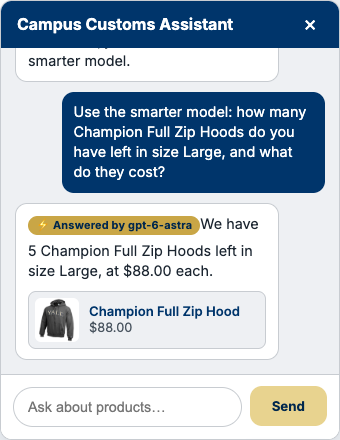
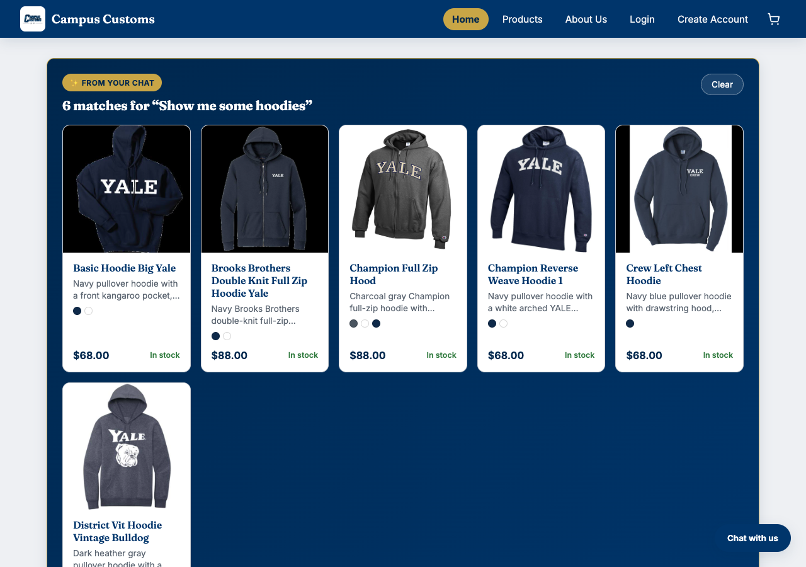
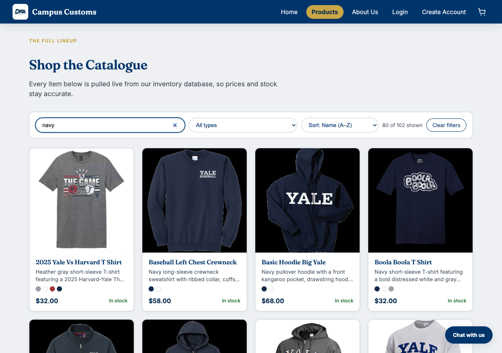

Chat: Honest Stock & Price Pull From the Database

Asked the chat "how many Champion Full Zip Hoods do you have left in size Large, and what
do they cost?" (requesting the smarter gpt-6-astra model). The reply states
exactly 5 in stock and $88.00 each — both values pulled live from campus_customs.db
via the get_stock/get_product_info tools, not guessed by the model.
Dynamic Search-Result Cards After a Category Question

Asked the chat "Show me some hoodies." The agent called search_products and
the reply's product matches appeared automatically as a live card grid on the page itself
(the "From your chat" panel) — 6 real hoodies with correct images, prices, and stock, not
just text in the chat bubble.
Product Search & Filter Bar

Typed "navy" into the catalogue's search bar. The grid instantly narrows to matching products and the count updates to "80 of 102 shown" — the search/filter/sort bar added in Problem 9 to make the 102-item catalogue easier to browse.